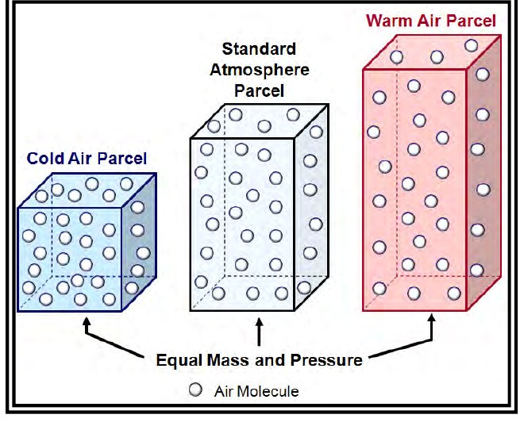
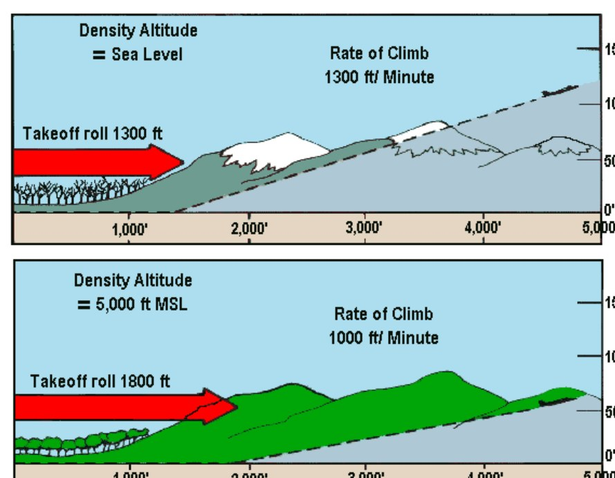
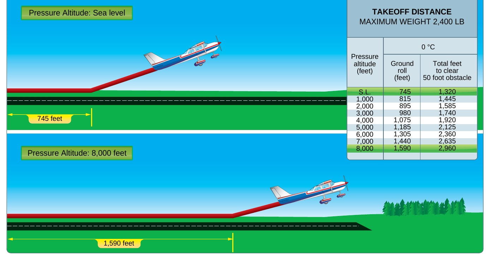

Lesson 02: Density Altitude and Aircraft Performance
Learning objectives
- Define density altitude.
- Explain how high temperature and elevation reduce thrust, lift and climb.
- Relate indicated, true and ground speed on a hot, high runway.

Warm air is less dense
At the same pressure, warm air holds fewer molecules in the same volume than cold air. Density altitude is the altitude in the standard atmosphere at which the density equals the actual density: a hot day makes the aircraft perform as if it were much higher.

What high density altitude does
- Less thrust or power — jets and turboprops alike (see Lesson 5: flat rating).
- Less lift at a given true airspeed — the same indicated airspeed means a higher true airspeed and ground speed.
- Longer take-off and landing distances and lower climb gradients.

Altitude and temperature together
Aerodrome elevation adds to the effect of temperature. A high-elevation aerodrome on a hot afternoon is the most demanding case: the take-off distance can be far longer than at sea level.

Indicated airspeed tells the wing what it needs; true airspeed and ground speed tell the runway, the tyres and the brakes what they will get. On a hot, high runway the ground speed is higher at the same V speeds.
Key takeaways
- Density altitude = the standard-atmosphere altitude with the actual density.
- Hot and high: less thrust and lift, longer distances, lower climb gradient.
- Same IAS → higher TAS and ground speed: more runway, tyre speed and brake energy.
Knowledge check
What happens to the take-off distance on a hot day at a high aerodrome?
- It decreases
- It increases significantly
- It stays the same
- It depends only on the wind
Answer: B. Lower density reduces thrust and lift and raises the ground speed: distances increase.